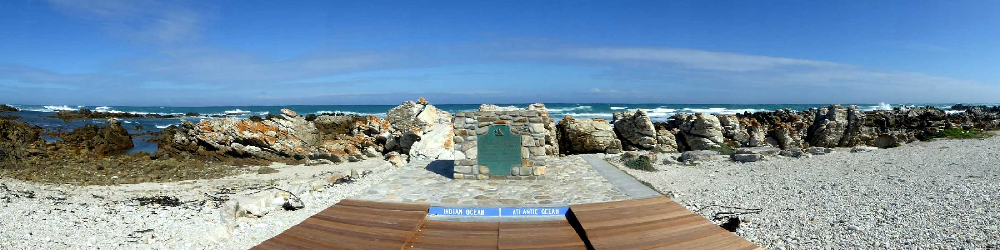
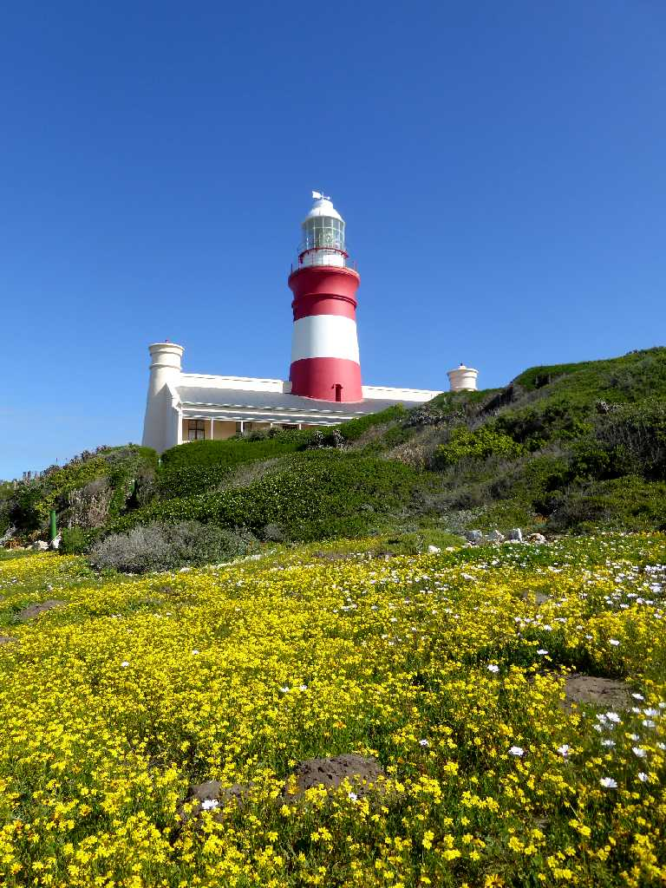
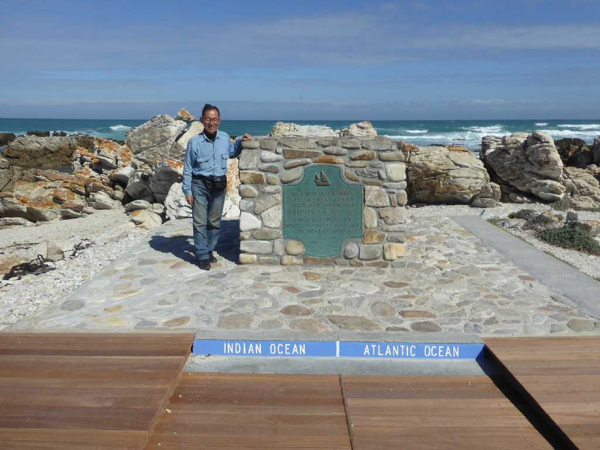

Indian Ocean Southernmost Tip of Africa Atlantic Ocean
アジアへの南アフリカ航路が発見された当時はアフリカ大陸最南端は喜望峰と考えられていたが測量技術の発達によりアガラス岬付近の海岸線がアフリカ大陸最南端と判明した

Lighthouse Southernmost Tip of Africa

September 14 2018 Southernmost Tip of Africa